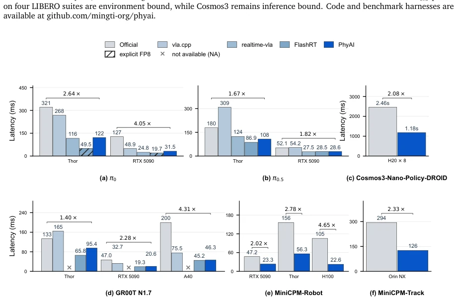
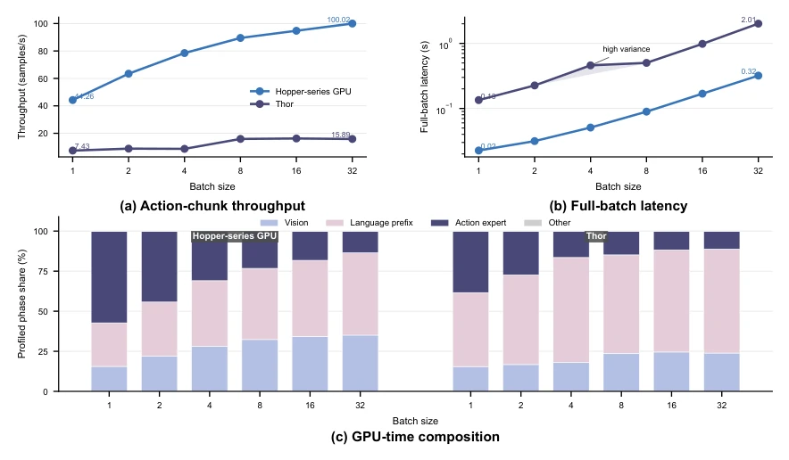
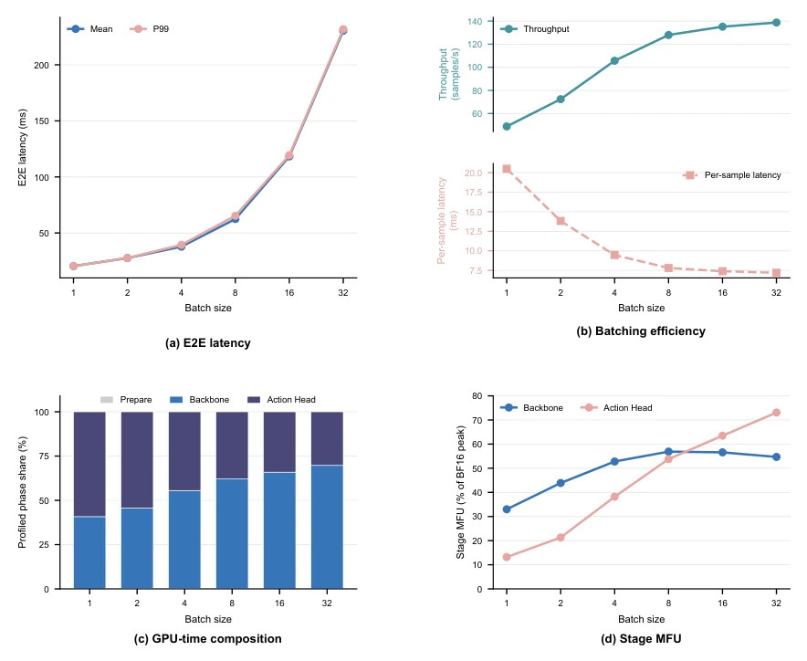
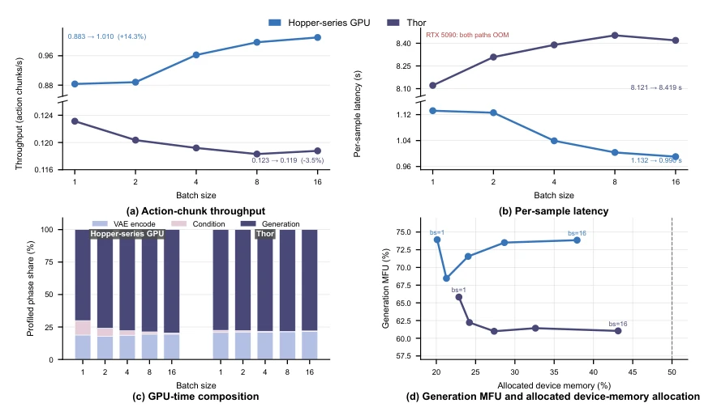
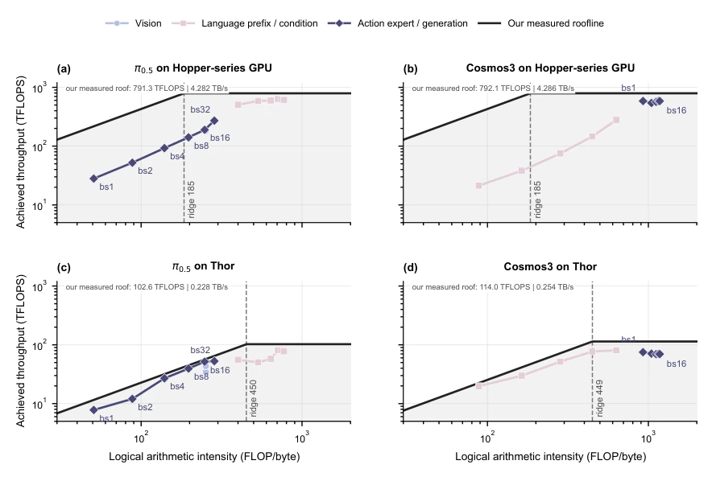
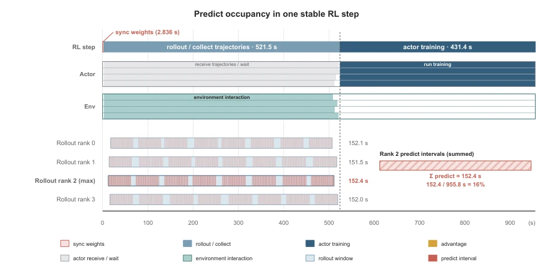

具身智能（Embodied AI）模型的全生命周期涉及离线评估、云端强化学习（RL） rollout、边缘服务和本地部署。虽然这些场景使用相同的模型检查点和动作语义，但现有系统往往依赖独立的推理程序（如FlashRT、vla.cpp、realtime-vla等），导致每个路径都需要单独优化和验证，行为无法自动迁移（Su, 2026; Nguyen et al., 2026; Ma et al., 2025）。LeRobot虽然提供了异步策略推理栈，但缺乏内核级的多架构执行引擎（Cadene et al., 2026）。现有的LLM推理系统（如vLLM、SGLang）无法直接复用多模态条件、迭代动作求解器或分类器无引导（CFG）分支。这种割裂导致开发效率低下，且难以在云端和边缘端之间保持一致性。PhyAI旨在解决这一痛点，提供一个统一的推理运行时，既能保持模型语义，又能针对不同架构和部署环境选择执行策略。
—

Figure 1. Single-request latency across six embodied policies. (a), 𝜋0. (b), 𝜋0.5. (c), Cosmos3-Nano-Policy-DROID. (d), GR00T N1.7. (e), MiniCPM-Robot. (f), MiniCPM-Track. Brackets give PhyAI speedup over the official path on matched hardware; lower is better. Hatched bars mark explicit FP8 results, and crosses mark unavailable measurements. MiniCPM-Robot uses LIBERO with two 224 × 224 views; Cosmos3 uses eight H20 GPUs with CFG=2 and TP=4; MiniCPM-Track is measured on Orin NX.
Figure 2. Control-time Roofline and RTC schedules. (a), Mean control rates for OpenPI and PhyAI on four LIBERO suites. (b), Schematic timing of synchronous serving and RTC across two action chunks.

Figure 5. PI0.5 BF16 batch scaling with CUDA Graphs. (a), Action-chunk throughput. (b), Mean full-batch latency; shading marks the Thor batch-four range. (c), GPU-time share by phase.

Figure 6. GR00T-N1.7 BF16 batch profile on RTX 5090. (a), Mean and P99 end-to-end latency. (b), Throughput and per-sample latency. (c), GPU-time share for Prepare, Backbone, and Action Head. (d), Phase MFU relative to the measured BF16 peak. Each batch uses eight warm-up iterations, followed by 30 timed iterations for end-to-end latency and 10 CUDA Event windows for phase measurements.

Figure 7. Cosmos3 BF16 batch profile. (a), Action-chunk throughput. (b), Per-sample latency. (c), GPU-time share by phase. (d), Generation MFU and allocated memory. Panels (a) and (b) use broken axes; RTX 5090 ran out of memory.
其他图片Other Figures

Figure 8. BF16 Rooflines for PI0.5 and Cosmos3 using logical arithmetic intensity on a Hopper-series GPU and Thor.

Figure 9. Timeline of one stable RL step on four A800 80 GB GPUs.